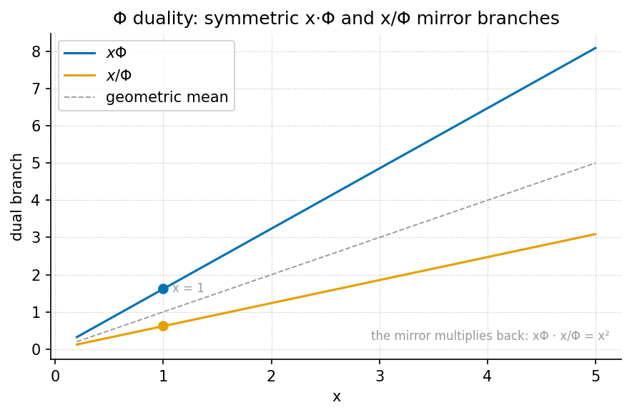

Proton Space, Electron Theater, and Φ Duality

textbook.models.phi_dual:
each input \(x\) is filed into an upper
branch \(x\Phi\) and a lower branch
\(x/\Phi\), symmetric about the input
line with a log-scale offset of \(\pm\ln\Phi
\approx \pm 0.481212\).Level 1/3 · 35 min read · 50 min lecture · Prerequisites: [@sec:part_0_octave-map], [@sec:part_I_fractal-constant]
Learning Objectives
By the end of this chapter you should be able to:
- State the digit-filing duality of [@sec:part_II_proton-theater]: which digit triggers the Proton Space filing and which triggers the Electron Theater filing, and under which filing constant the pair is filed.
- Explain the role of El Gran Sol’s Fractal constant \(\Phi \approx 1.618\) as the engine shelf filing constant, and distinguish the two conventions the corpus uses for octave terms \(\Omega_n\).
- Compute the Φ-duality pair \((x\Phi,\;
x/\Phi)\) with the tested function
textbook.models.phi_dualand verify its mirror identities numerically. - Place the source paper on the engine shelf — engine shelf #16, companion to prime-parity and prime volumetric storage — and restate its honesty-first scope disclaimers precisely.
- Describe the zero balance node of the companion paper Topology of the Void as the corpus states it — without inventing a formula the corpus does not give.
- Run the paper’s reference implementation and interpret its reported 9/9 suite locks result as a catalog-architecture check.
Study Blueprint
- Big idea: the corpus files the structural pair (1, 2) — leading digit 1 versus structural digit 2 — as two named drawers, Proton Space and Electron Theater, under the filing constant \(\Phi\); the filing is a catalog move, not a physics derivation.
- Core concepts: proton-space, electron-theater, fractal-constant, golden-ratio, prime-parity, topology-of-the-void.
- Quantitative lens: the Φ-duality mirror of [@eq:part_II_proton-theater_duality] and its identities in [@eq:part_II_proton-theater_mirror].
- Data skill: compute a duality pair by hand, then
confirm it against
textbook.models.phi_dualand read the mirror plot of [@fig:part_II_proton-theater]. - Common misconception to repair: the chapter’s “proton” and “electron” are filing labels for digits, not particle physics — the paper explicitly disclaims any QED dyad proof.
- Primary lab: [@sec:lab_part_II_proton-theater].
- Question bank: [@sec:q_part_II_proton-theater].
- Bridge to computation:
textbook.models.phi_dual.
Opening Vignette: Two drawers on the engine shelf.
Aboard the SS Vibelandia, the catalog clerk stands before engine shelf #16 of the Infinite Octaves. Every constant that arrives for filing is read digit by digit: a value whose leading digit is 1 — \(\Phi = 1.618\ldots\), the mantissa talk of \(\hbar\) — slides into the drawer labelled Proton Space; a value carrying the structural digit 2 — the sole-even prime, \(2\pi\) — goes into Electron Theater. Above both drawers hangs a single placard: filed under \(\Phi \approx 1.618\). The clerk stamps the slip, notes that the solar labels on today’s letters — “Helios-Prime” (AR3664) and “Borealis” (AR3590) — are story filing characters, and applies the Fair Exchange clause. That is the whole scene: a filing act, honestly labelled as such [mendez2026protonTheater].
The paper in the corpus
This chapter formalises the ship-blog paper “Proton Space ·
Electron Theater · Φ Duality” (2026-09-05), authored by
Prudencio Mendez and operated by the SynthOBS Autonomous Agent on the SS
Vibelandia blog [mendez2026protonTheater]. The paper self-describes as
catalog
architecture filed at engine shelf #16 of
the Infinite Octaves, with a 9/9 suite locks result
recorded under
research/synthobs-proton-space-electron-theater/ and a
standalone wiring at
FractiAI/synthobs-proton-space-electron-theater
[mendez2026protonTheater]. Its declared companions are [Topology of the
Void] — “Zero as the balance node between 1 and 2”
[mendez2026topologyVoid] — and [Prime-parity] — the sole-even digit 2
against odd irreducible sets [mendez2026primeParity] — with prime
volumetric storage named alongside as shelf companion
[mendez2026volumetricStorage; mendez2026protonTheater].
The paper sits early in Part II deliberately: its two drawers are the simplest filing act on the physical engine shelf, and the chapters that follow — viscosity of light ([@sec:part_II_viscosity-light]), the eddy-current mirror ([@sec:part_II_eddy-current-mirror]), the crystalline unified field ([@sec:part_II_crystalline-field]) — all file under the same fair-exchange regime with the same honesty-first banner.
graph TD
C[Incoming constant c, read digit by digit] --> D1{Leading digit = 1?}
C --> D2{Structural digit = 2?}
D1 -->|yes| PS[Proton Space drawer<br/>Φ · ℏ mantissa talk]
D2 -->|yes| ET[Electron Theater drawer<br/>sole-even prime · 2π]
PS --> Z[Zero — balance node between 1 and 2<br/>Topology of the Void]
ET --> Z
PS --> FX[Filing constant Φ ≈ 1.618<br/>El Gran Sol's Fractal constant]
ET --> FX
FX --> FE[Fair Exchange clause applied]The filing duality: digit 1 and digit 2
The paper’s core construct is a two-drawer filing map for digits, which we formalise directly from its claim: “Leading digit 1 (Φ, ℏ mantissa talk) files as Proton Space; structural 2 (sole-even prime, 2π) files as Electron Theater” [mendez2026protonTheater]. As a catalog rule the map reads:
\[ \mathrm{file}(c) = \begin{cases} \text{Proton Space} & \text{if the leading digit of } c \text{ is } 1,\\[4pt] \text{Electron Theater} & \text{if the structural digit of } c \text{ is } 2, \end{cases} \] {#eq:part_II_proton-theater_filing}
with the whole map filed under the single constant \(\Phi \approx 1.618\) [mendez2026protonTheater]. The vocabulary of [@eq:part_II_proton-theater_filing] is collected in [@tbl:part_II_proton-theater_filingmap].
| Term | Corpus definition | Trigger |
|---|---|---|
| Proton Space | filing category for leading digit 1 (Φ, ℏ mantissa talk) | leading digit 1 |
| Electron Theater | filing category for structural 2 (sole-even prime, \(2\pi\)) | structural digit 2 |
| leading digit 1 | trigger of the Proton Space filing | digit-by-digit read |
| structural 2 | trigger of the Electron Theater filing; identified with the sole-even prime and \(2\pi\) | digit-by-digit read |
| Φ duality | the page’s framing of the 1/2 filing pair under \(\Phi\) | og:title framing |
| ℏ mantissa talk | the reduced-Planck-constant mantissa context assigned to digit 1 | mantissa framing |
Two of these rows reach outside the chapter and are worth pausing on. The structural 2 row is explicitly identified with the sole-even prime, which is the anchor of the prime-parity filing [mendez2026primeParity]; we treat that filing in full in [@sec:part_I_prime-parity]. And the ℏ mantissa talk row is a framing about digits of constants, not about physics: the paper assigns the reduced Planck constant’s mantissa context to digit 1 while simultaneously disclaiming any leading-digit causation for \(\hbar\) [mendez2026protonTheater]. We read this as: the mantissa of a physical constant is filed by its leading digit, but nothing in the corpus claims the digit causes anything.
Φ as filing constant
Both drawers hang under one placard: El Gran Sol’s Fractal constant \(\Phi \approx 1.618\), the filing constant of the Infinite Octaves engine shelf [mendez2026protonTheater]. This is the golden ratio, whose standard algebra the corpus leans on:
\[ \Phi^{2} = \Phi + 1, \qquad \frac{1}{\Phi} = \Phi - 1, \qquad \Phi - \frac{1}{\Phi} = 1 \] {#eq:part_II_proton-theater_identity}
Identity [@eq:part_II_proton-theater_identity] is ordinary mathematics of the golden ratio (the defining equation \(\Phi^2 = \Phi + 1\) follows from \(\Phi = (1+\sqrt{5})/2\)), and it earns its place here because the third form — \(\Phi - 1/\Phi = 1\) — makes the digit 1 structurally visible inside \(\Phi\) itself: the filing constant is exactly one unit wider than its own reciprocal. The pinned values used throughout this book are collected in [@tbl:part_II_proton-theater_pinned].
| Quantity | Value | Backing function |
|---|---|---|
| \(\Phi\) | \(1.618034\) | textbook.models.PHI |
| \(1/\Phi = \Phi - 1\) | \(0.618034\) | phi_dual (lower branch) |
| \(\Phi^{2} = \Phi + 1\) | \(2.618034\) | phi_powers |
| \(\ln \Phi\) | \(0.481212\) | (mirror offset, [@fig:part_II_proton-theater]) |
| \(\varphi_{\mathrm{fib}}(5) = 8/5\) | \(1.6\) | phi_fibonacci(5) |
| \(\varphi_{\mathrm{fib}}(10) = 89/55\) | \(1.618182\) | phi_fibonacci(10) |
Because \(\Phi\) is also the engine
shelf’s octave constant, one convention question must be settled here
rather than later. The corpus prints the octave term ambiguously as
“\(\Omega_n = \Phi^n \Omega_0\)”; the
book therefore carries both readings, implemented as
octave_term(omega0, n, convention) in
textbook.models:
\[ \Omega_n = \Phi^{\,n}\,\Omega_0 \;\;\text{(exponent convention)}, \qquad \Omega_n = \varphi_{\mathrm{fib}}(n)\,\Omega_0 \;\;\text{(subscript convention)}. \] {#eq:part_II_proton-theater_octaves}
With \(\Omega_0 = 1\) and \(n = 5\), the exponent convention gives \(\Omega_5 = \Phi^5 = 11.090170\) while the subscript convention gives \(\varphi_{\mathrm{fib}}(5) \cdot 1 = 1.6\) — a factor of nearly seven apart, so the choice matters. By \(n = 10\) the subscript reading has converged to \(1.618182\), within \(0.01\%\) of \(\Phi\). The 99-octave ladder these terms climb is built in [@sec:part_0_octave-map], and the growth-law side of \(\Phi\) is the subject of [@sec:part_I_fractal-constant].
The Φ-duality mirror
The chapter’s worked formalism is the pairing that the figure plan calls the Φ duality mirror: every value \(x\) filed under \(\Phi\) acquires two images, an upper filing \(x\Phi\) and a lower filing \(x/\Phi\) [mendez2026protonTheater]:
\[ \Phi_{+}(x) = x\,\Phi, \qquad \Phi_{-}(x) = \frac{x}{\Phi}. \] {#eq:part_II_proton-theater_duality}
The pair is implemented and tested as
textbook.models.phi_dual(x), which returns exactly the
tuple \((x\Phi,\; x/\Phi)\); never
retype the arithmetic in prose or scripts — call the tested function.
Three identities follow from [@eq:part_II_proton-theater_identity]
and [@eq:part_II_proton-theater_duality]
together, and they are what the mirror plot of [@fig:part_II_proton-theater]
makes visible:
\[ \Phi_{+}(x)\,\Phi_{-}(x) = x^{2}, \qquad \frac{\Phi_{+}(x)}{\Phi_{-}(x)} = \Phi^{2}, \qquad \Phi_{-}\!\bigl(\Phi_{+}(x)\bigr) = x. \] {#eq:part_II_proton-theater_mirror}
Read [@eq:part_II_proton-theater_mirror] as three statements about the filing. First, the two images multiply back to the original value squared: \(x\) is the geometric mean of its own upper and lower filings, so the mirror is balanced — no drawer is privileged. Second, the images are a fixed factor \(\Phi^2\) apart, which on a logarithmic axis is a fixed offset of \(\ln \Phi^2 = 2\ln\Phi \approx 0.962424\), symmetric about \(\ln x\). Third, the filing is an involution: filing the upper image back down returns the original value, so the duality loses no information — a desirable property in a catalog whose first duty is honesty-first bookkeeping. The parameters of [@eq:part_II_proton-theater_duality] are collected in [@tbl:part_II_proton-theater_duality].
| Symbol | Meaning | Units |
|---|---|---|
| \(x\) | value being filed | catalog unit |
| \(\Phi\) | filing constant, \((1+\sqrt{5})/2\) | dimensionless |
| \(\Phi_{+}(x)\) | upper filing, \(x\Phi\) | catalog unit |
| \(\Phi_{-}(x)\) | lower filing, \(x/\Phi\) | catalog unit |
Worked example: walking the mirror
Take three filed values and compute each duality pair by hand, then
confirm against textbook.models.phi_dual.
Step 1 — file \(x = 1\). The upper filing is \(\Phi_{+}(1) = \Phi = 1.618034\); the lower filing is \(\Phi_{-}(1) = 1/\Phi = 0.618034\). Note that the upper image is the filing constant itself — \(\Phi = 1.618\ldots\), whose leading digit is 1; we read the corpus’s “leading digit 1” filing as attaching to \(\Phi\) on exactly this ground. Check the product identity of [@eq:part_II_proton-theater_mirror]: \(1.618034 \times 0.618034 = 1 = 1^2\). ✓
Step 2 — file \(x = 2\), the Electron Theater digit. The upper filing is \(\Phi_{+}(2) = 2\Phi = 3.236068\); the lower filing is \(\Phi_{-}(2) = 2/\Phi = 1.236068\). Here a fourth identity, worth adding to the mirror set, follows from \(\Phi - 1/\Phi = 1\):
\[ \Phi_{-}(x) \;=\; \Phi_{+}(x) - x, \] {#eq:part_II_proton-theater_step}
since \(x/\Phi = x(\Phi - 1) = x\Phi - x\). Check: \(3.236068 - 2 = 1.236068\). ✓
Step 3 — close the involution. Apply the lower map to the upper image: \(\Phi_{-}(3.236068) = 3.236068 / 1.618034 = 2\). The Electron Theater digit returns exactly. ✓
Step 4 — confirm against the tested backbone.
from textbook.models import phi_dual, PHI
PHI # 1.618033988749895
phi_dual(1) # (1.618033988749895, 0.618033988749895)
phi_dual(2) # (3.23606797749979, 1.2360679774997896)
phi_dual(2)[0] * phi_dual(2)[1] # 4.000000000000001 ≈ x²
phi_dual(phi_dual(2)[0])[1] # 2.0 — the involution closesEvery number above matches the hand computation to display precision, and the same pairs are the two branches plotted in [@fig:part_II_proton-theater].
Note
The mirror identities in [@eq:part_II_proton-theater_mirror] and [@eq:part_II_proton-theater_step] are our formalisation of the corpus’s filing act — standard mathematics of \(\Phi\) — not claims made by the paper. The paper itself files the pair (1, 2) and states no formula for it; where the corpus is silent, this book says so.
Zero as the balance node
The paper names one companion result without deriving it: “[Topology
of the Void] — Zero as the balance node between 1 and 2”
[mendez2026protonTheater; mendez2026topologyVoid]. The corpus gives
no formula for this balance, and the honest reading is
to leave it so: zero balances the two drawers, in the sense that the topology of the
void treats zero as the equilibrium node the pair is
measured against. The formal treatment of zero-as-equilibrium belongs to
[@sec:part_I_topology-void],
and the same zero reappears in this part as node \(k = 0\) of the singularity crystal
([@sec:part_II_singularity-crystal]);
the tested phi_dual function in
textbook.models carries the singularity-crystal filing in
its docstring, which is the codebase’s own record that the Φ duality
feeds that chapter.
Scope and honesty
The paper’s own scope disclaimer is the load-bearing sentence of the chapter, and we restate it near-verbatim [mendez2026protonTheater]:
“Honesty first: this is catalog architecture — engine shelf #16 — not a CODATA/SI derivation from Φ, not ħ leading-digit causation, not a QED dyad proof, and not zero-crosstalk quantum hardware.”
Each negation is precise, and the chapter’s formalisms must be read inside them:
- Not a CODATA/SI derivation from Φ — nothing here derives a physical constant’s value from the golden ratio; \(\Phi\) is a filing constant.
- Not ħ leading-digit causation — the “ℏ mantissa talk” of drawer 1 is a digit-of-constants filing context, not a claim that leading digits cause physical behaviour.
- Not a QED dyad proof — “Proton” and “Electron” are drawer labels for digits 1 and 2, not particle physics, and no quantum-electrodynamic result is claimed.
- Not zero-crosstalk quantum hardware — the 9/9 suite locks are software catalog checks, not a hardware capability.
Two further honesty annotations complete the record. The solar labels AR3664 (“Helios-Prime”) and AR3590 (“Borealis”) are explicitly story filing characters — narrative furniture of the ship blog, not solar physics [mendez2026protonTheater]. And the Fair Exchange clause applies to the whole filing: the refund-adjustment terms of the ship-blog series govern every drawer on engine shelf #16 [mendez2026protonTheater]. What the construct is for is coordination and cataloging: a deterministic, digit-triggered rule for routing constants into named drawers, with a tested suite (9/9 locks) verifying the routing. What it is not is a physical theory — the corpus says so first, and so does this book.
Connections
The digit-filing duality feeds three directions. Backward, the structural-2 drawer is the sole-even anchor of prime parity ([@sec:part_I_prime-parity]), and the filing constant \(\Phi\) is the growth law formalised in [@sec:part_I_fractal-constant]. Sideways, the zero balance node hands off to the topology of the void ([@sec:part_I_topology-void]) and to node \(k = 0\) of the singularity crystal ([@sec:part_II_singularity-crystal]), whose net-zero balance bars are plotted in [@fig:part_II_singularity-crystal] — the same balance-node intuition, drawn with inflows and outflows instead of drawers. Forward, the volumetric-storage chapter ([@sec:part_III_volumetric-storage]) consumes the shelf-companion relationship the paper declares: prime-indexed addressing is the other half of the shelf’s storage story [mendez2026volumetricStorage]. Within Part II, the duality’s two-drawer discipline — every filed value is honestly labelled and its images recoverable — is the template the viscosity-of-light chapter ([@sec:part_II_viscosity-light]) applies to drag, and the metrological-overlap chapter ([@sec:part_II_metrological-overlap]) applies to pairwise measurement agreement.
Summary
The ship-blog paper “Proton Space · Electron Theater · Φ Duality”
files a two-drawer catalog map under engine shelf #16: leading digit
1 (Φ, ℏ mantissa talk) into Proton Space, structural
2 (sole-even prime, \(2\pi\)) into Electron Theater, both
under the filing constant \(\Phi \approx
1.618\) [mendez2026protonTheater]. The book’s worked formalism is
the Φ-duality mirror of [@eq:part_II_proton-theater_duality],
implemented as textbook.models.phi_dual: upper filing \(x\Phi\) and lower filing \(x/\Phi\) satisfy the product, ratio, and
involution identities of [@eq:part_II_proton-theater_mirror],
so the filing is balanced, fixed-ratio, and information-preserving. The
companion paper Topology of the Void supplies zero as the balance node
between the two drawers — stated by the corpus without a formula, and
left without one here [mendez2026topologyVoid]. Everything rests on the
paper’s own honesty-first disclaimer: catalog architecture, not a
CODATA/SI derivation, not ħ leading-digit causation, not a QED dyad
proof, not zero-crosstalk quantum hardware.
Key Terms
proton-space, electron-theater, fractal-constant, golden-ratio, engine-shelf, catalog-architecture, honesty-first, fair-exchange, prime-parity, topology-of-the-void, singularity-crystal.
Further Reading
- Whitepaper: Proton Space · Electron Theater · Φ Duality — whitepaper surface — the paper’s own filing record, including the 9/9 suite locks.
- Reference implementation: FractiAI/synthobs-proton-space-electron-theater
— standalone wiring for the digit-filing suite; re-run with
npm run research:synthobs-proton-space-electron-theater. - @mendez2026topologyVoid — the companion paper filing zero as the balance node between 1 and 2; read for the equilibrium reading of the void.
- @mendez2026primeParity — the sole-even prime 2 against odd irreducible sets; the structural-2 drawer’s arithmetic anchor.
- @mendez2026volumetricStorage — prime-indexed volumetric storage, the shelf’s named storage companion.
Practice
- Lab: [@sec:lab_part_II_proton-theater]
— compute duality pairs by hand and verify them against
phi_dualand the reference suite. - Question bank: [@sec:q_part_II_proton-theater] — recall through synthesis on the filing map, the mirror identities, and the scope disclaimers.
- File the constants \(e = 2.718\ldots\) and \(\pi = 3.141\ldots\) through [@eq:part_II_proton-theater_filing] and state, with reasons, which drawer (if either) each enters — and what the exercise shows about the map’s coverage.
- Verify the identity \(\Phi_{-}(x) =
\Phi_{+}(x) - x\) of [@eq:part_II_proton-theater_step]
for \(x = 5\) by hand, then with
textbook.models.phi_dual(5). - Rewrite the paper’s honesty-first disclaimer from memory, then check it against the Scope and honesty section above; any word you changed is a word whose precision you should re-examine.